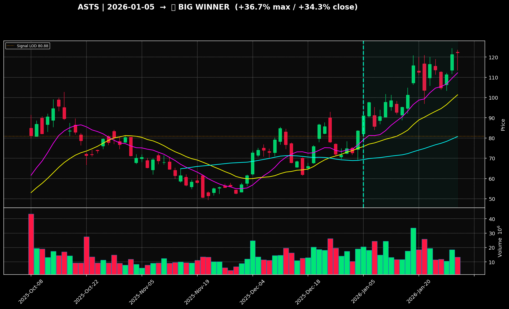

Python · Pine Script · SQLite · LightGBM
Algorithmic Trading Analysis System
Problem: reviewing thousands of charts manually is slow and inconsistent. This system screens 5,000+ stocks, saves each setup, and checks what happened after the signal.
5,000+stocks screened
150,000+labeled observations
LightGBMcalibrated scoring
System flow
One repeatable path from signal to evidence
01Daily market data
02Technical features
03SQLite snapshots
04Forward outcome labels
05LightGBM calibration
Stored backtest evidence
A winner and a failed breakout


Why this matters
A strategy cannot be judged from its best examples. Keeping failed setups beside winners makes the scoring logic testable and exposes where a signal breaks down.
What I learned
Historical testing depends on preserving what was known at the signal date. Calibration, data boundaries, and failed examples matter as much as the model choice.